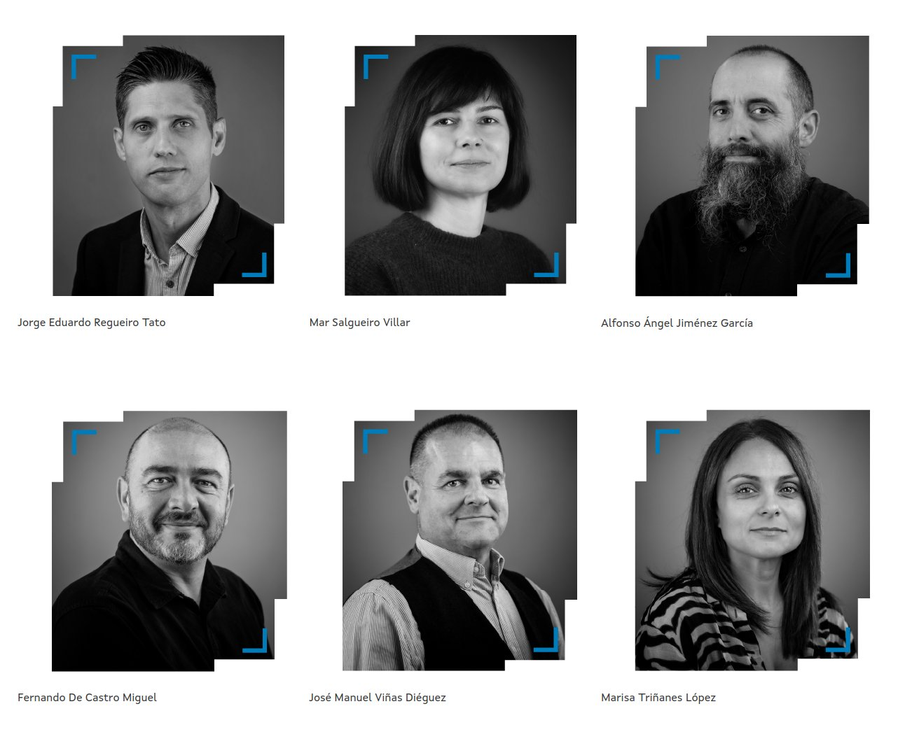
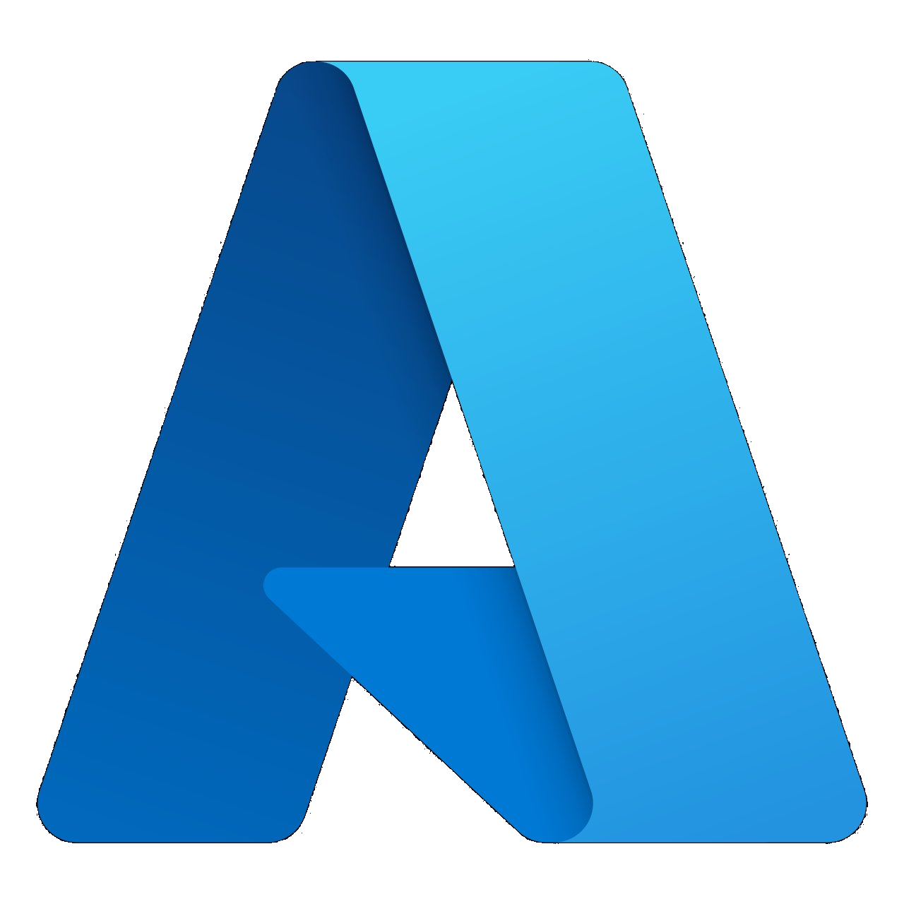
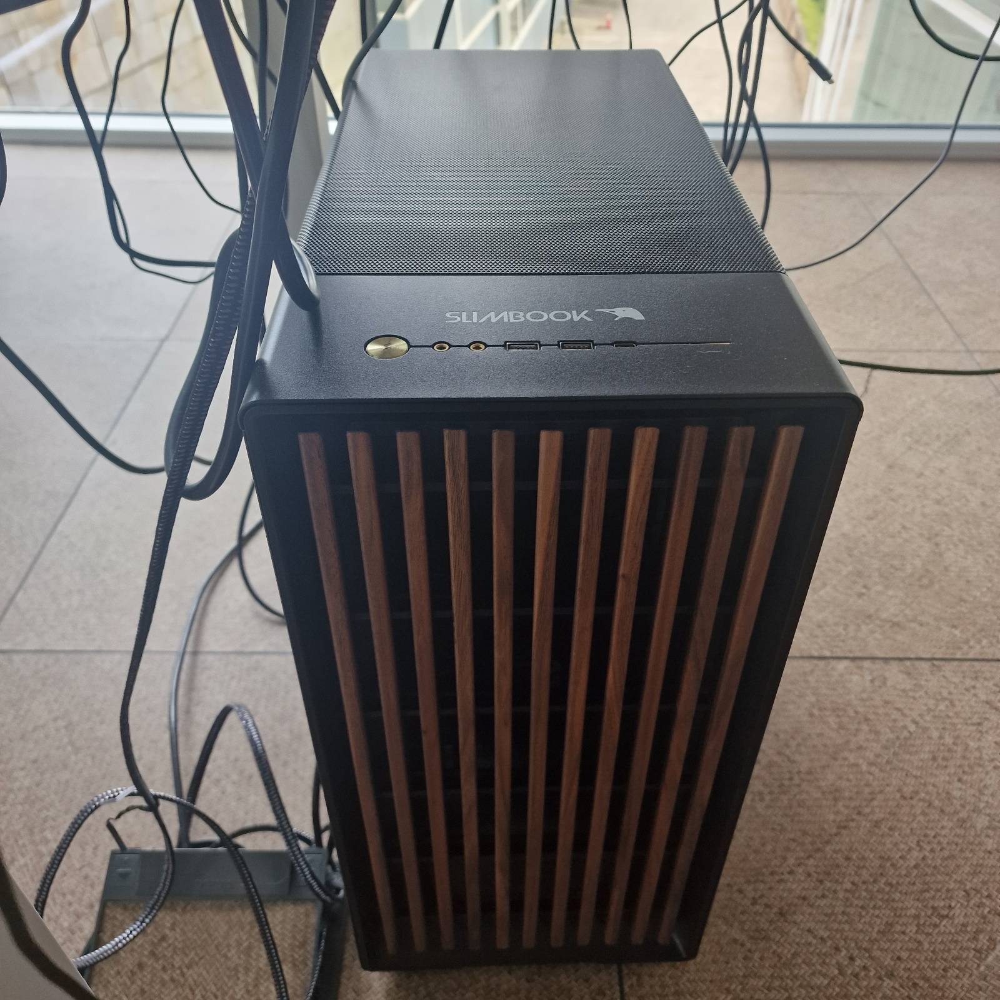
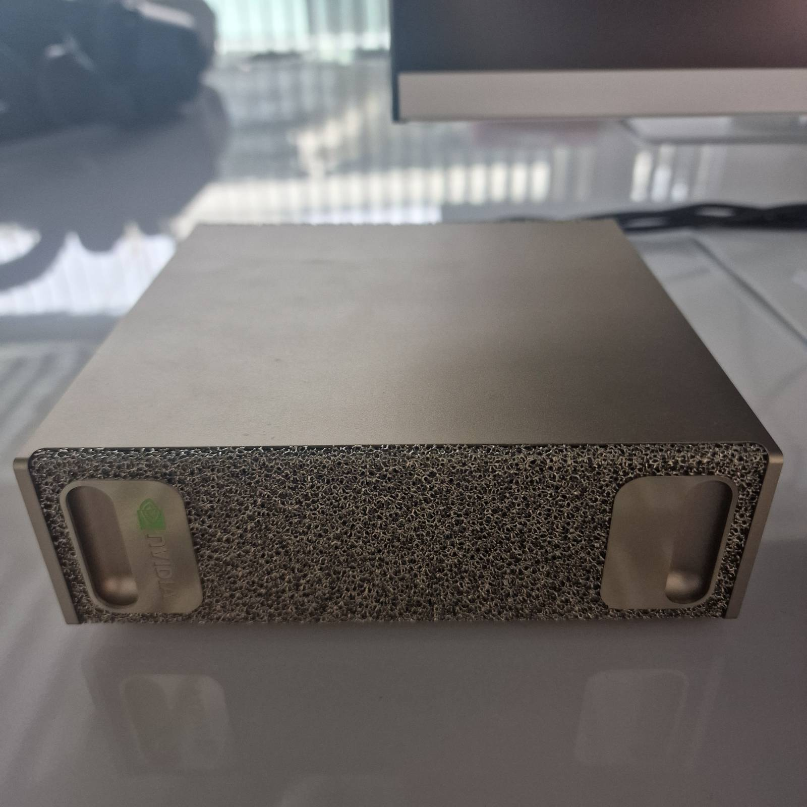
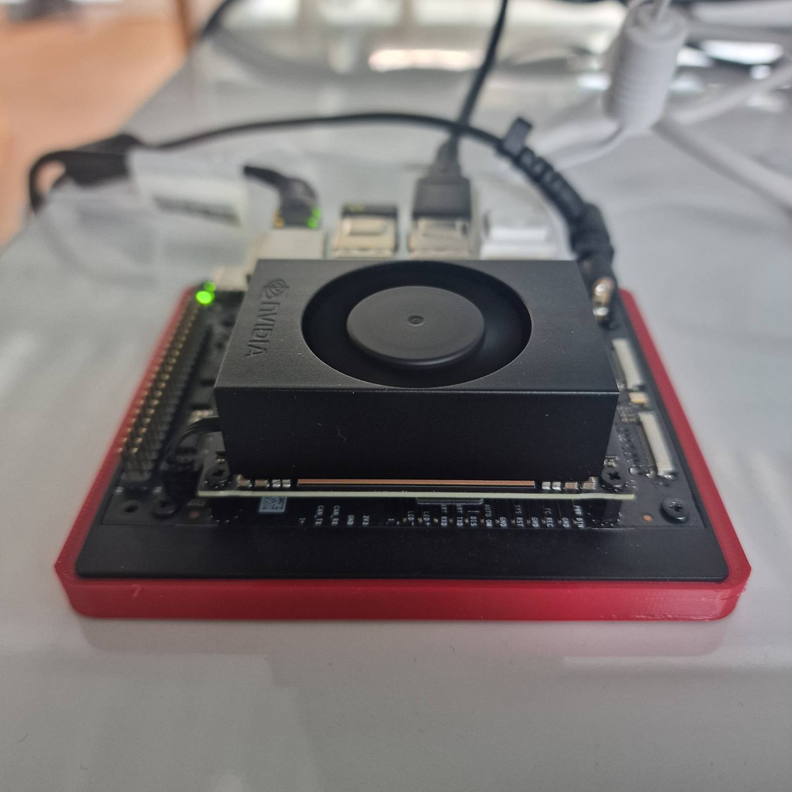
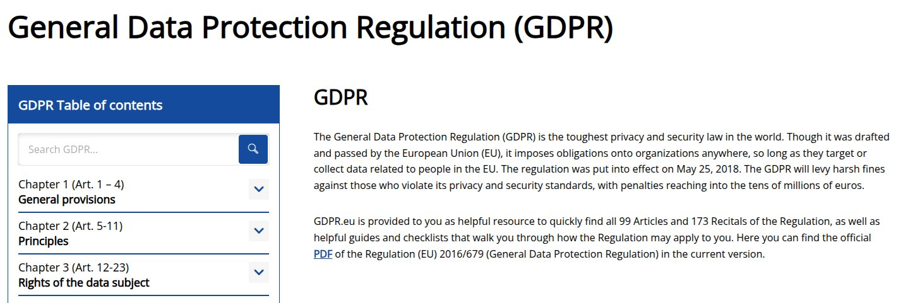
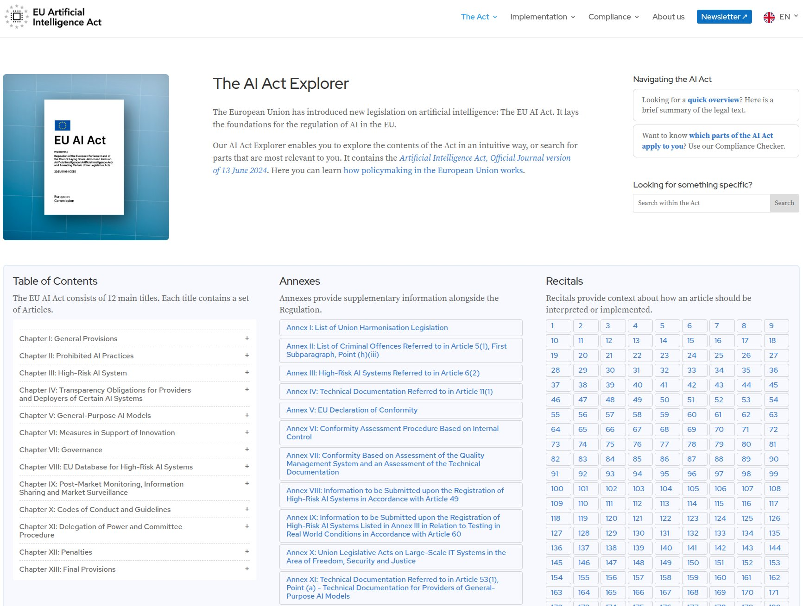
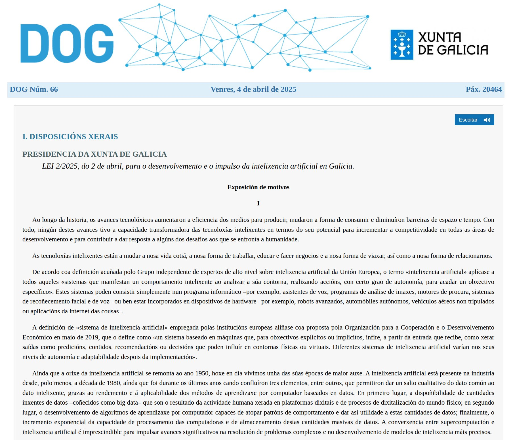
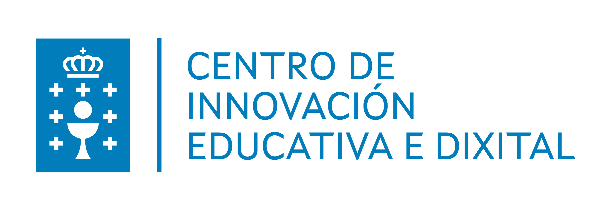
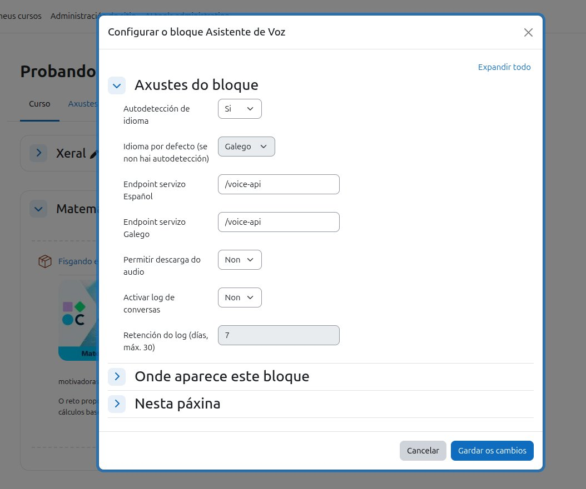

Intelixencia Artificial para a Educación Galega Inteligencia Artificial para la Educación Gallega
Alfonso Jiménez García
Centro de Innovación Educativa e Dixital
Consellería de Educación, Ciencia, Universidades e Formación Profesional
Alfonso Jiménez García
Centro de Innovación Educativa y Dixital
Consellería de Educación, Ciencia, Universidades y Formación Profesional
O CIEDix é o órgano da Consellería de Educación dedicado a anticipar, avaliar e acompañar a transformación dixital do sistema educativo galego. El CIEDix es el órgano de la Consellería de Educación dedicado a anticipar, evaluar y acompañar la transformación digital del sistema educativo gallego.
Dentro do CIEDix, o CIEDixlab é o espazo de investigación técnica, mantendo a perspectiva docente: probamos, rompemos e reconstruímos para ofrecer evidencia sólida antes de tomar decisións que afectan a centros, docentes e estudantes. Dentro del CIEDix, el CIEDixlab es el espacio de investigación técnica, manteniendo la perspectiva docente : probamos, rompemos y reconstruimos para ofrecer evidencia sólida antes de tomar decisiones que afectan a centros, docentes y estudiantes.

Revisión e control de solucións comerciais (con ou sen IA) con criterios funcionais, éticos e normativos. Revisión y control de soluciones comerciales (con o sin IA) con criterios funcionales, éticos y normativos.
Construción de produtos propios para a Consellería cando o mercado non cobre a necesidade. Construcción de productos propios para la Consellería cuando el mercado no cubre la necesidad.
Coordinación e participación en equipos interdisciplinares: docentes, persoal técnico. Coordinación y participación en equipos interdisciplinares: docentes, personal técnico.
Métodos do estado da arte (p. ex. AirLLM) e a súa replicación no contexto educativo. Métodos del estado del arte (p. ej. AirLLM) y su replicación en el contexto educativo.
Definición e estruturación do laboratorio: infraestrutura, procesos e criterios de evidencia. Definición y estructuración del laboratorio: infraestructura, procesos y criterios de evidencia.
Decisión informada:
ningunha recomendación sen evidencia previa.
Decisión informada:
ninguna recomendación sin evidencia previa.
Máquinas desplegadas no laboratorio para executar
modelos abertos
in-house, sen dependencia de conexión externa nin transferencia de datos fóra
da organización.
A primeira evidencia, os límites da propia organización.
Máquinas desplegadas en el laboratorio para ejecutar
modelos abiertos
in-house, sin dependencia de conexión externa ni transferencia de datos fuera
de la organización.
La primera evidencia, los límites de la propia organización.

O acordo marco coa AMTEGA proporciona cobertura legal e operativa para usar estes servizos coa garantía institucional que non podemos conseguir contratando directamente cada provedor. El acuerdo marco con la AMTEGA proporciona cobertura legal y operativa para usar estos servicios con la garantía institucional que no podemos conseguir contratando directamente cada proveedor.



Tres perfís complementarios que cobren todo o ciclo: desde o adestramento ata a inferencia no bordo en dispositivos con restricións reais como as dunha aula. Tres perfiles complementarios que cubren todo el ciclo: desde el entrenamiento hasta la inferencia en el borde en dispositivos con restricciones reales como las de un aula.
Non se trata de escoller entre nube ou local. Trátase de comparar, medir e entender que nos ofrece cada vía para cada necesidade educativa concreta. No se trata de elegir entre nube o local. Se trata de comparar, medir y entender qué nos ofrece cada vía para cada necesidad educativa concreta.
A soberanía dixital entendémola como a capacidade de seguir prestando o servizo educativo aínda cando un provedor externo cambia as regras, sobe prezos ou retira un modelo. La soberanía digital la entedemos como la capacidad de seguir prestando el servicio educativo aún cuando un proveedor externo cambia las reglas, sube precios o retira un modelo.
Ter alternativa local non é prescindir da nube: é ter marxe de manobra. Tener alternativa local no es prescindir de la nube: es tener margen de maniobra.
Protección de datos do alumnado e profesorado. Base legal, minimización, transferencias internacionais, dereitos do interesado. Protección de datos del alumnado y profesorado. Base legal, minimización, transferencias internacionales, derechos del interesado.

A aplicación de IA en educación adoita clasificarse como alto risco: supervisión humana obrigatoria, rexistros de interacción, transparencia para familias e docentes. La aplicación de IA en educación se clasifica habitualmente como alto riesgo: supervisión humana obligatoria, registros de interacción, transparencia para familias y docentes.

Desenvolvemento autonómico con énfase na defensa da identidade galega: a lingua, a cultura e os contidos propios non poden ser un efecto colateral dos modelos alleos. Desarrollo autonómico con énfasis en la defensa de la identidad gallega: la lengua, la cultura y los contenidos propios no pueden ser un efecto colateral de los modelos ajenos.

A resposta é non. Esta é a revisión interna que facemos no laboratorio para decidir que modelos podemos despregar realmente —e cales non—. Avaliamos diferentes LLMs fronte a RGPD, AI Act e xurisdición. Algúns deles son: La respuesta es no. Esta es la revisión interna que hacemos en el laboratorio para decidir qué modelos podemos desplegar realmente —y cuáles no—. Evaluamos diferentes LLMs frente a RGPD, AI Act y jurisdicción. Entre ellos:
A aplicación concreta de IA na aula está aínda por construír.
Hai moito discurso e poucos casos sostidos por evidencia.
Debemos manter o enfoque centrado no carácter humano na educación, pero axudándonos de solucións realmente útiles e usables.
La aplicación concreta de IA en el aula está aún por construir.
Hay mucho discurso y pocos casos sostenidos por evidencia.
Debemos mantener el enfoque centrado en el carácter humano en la educación, echando mano de soluciones realmente útiles y usables.
Non atopamos desenvolvementos locais que atendan a diversidade do alumnado.
A inferencia en local é condición necesaria para adaptarse.
De ese enfoque humano, e do coñecemento do negocio, a educación, pódense elaborar solucións que atenda a esta facenda tan importante
No encontramos desarrollos locales que atiendan la diversidad del alumnado.
La inferencia en local es condición necesaria para adaptarse.
De ese enfoque humano y el conocimiento del negocio, la educación, se pueden elaborar soluciones que atiendan esta hacienda tan importante
Faltan datasets de contido educativo específico por materia.
Sen datos propios, non hai modelo propio.
É máis, non hai datasets en galego no eido educativo.
Faltan datasets de contenido educativo específico por materia.
Sin datos propios, no hay modelo propio.
Es más, no hay datasets en gallego en el ámbito educativo.
Escanea o QR e fai a túa pregunta en calquera momento da ponencia. Recóllense nun formulario aloxado na nosa plataforma BoxAbalar Escanea el QR y haz tu pregunta en cualquier momento de la ponencia. Se recogen en un formulario alojado en nuestra plataforma BoxAbalar
Nube · Local · Datos propios Nube · Local · Datos propios

Integración de Moodle cunha API propietaria para xerar batería de preguntas a partir dun temario. Funcionamento rápido e resultados de boa calidade. Integración de Moodle con una API propietaria para generar batería de preguntas a partir de un temario. Funcionamiento rápido y resultados de buena calidad.
O cloud é un camiño lexítimo, pero require asumir unha relación de dependencia. A pregunta non é cloud ou non, senón "ata onde podemos ceder sen comprometer o servizo público". El cloud es un camino legítimo, pero requiere asumir una relación de dependencia. La pregunta no es cloud o no, sino "hasta dónde podemos ceder sin comprometer el servicio público".
Por iso complementamos sempre con un escenario local funcional: como seguro, como banco de probas e como palanca de negociación. Por eso complementamos siempre con un escenario local funcional: como seguro, como banco de pruebas y como palanca de negociación.
Pipeline íntegramente local: Whisper para ASR, Mistral vía Ollama para o razoamento, e Piper con voces do Proxecto Nós para a síntese de voz. Pipeline íntegramente local: Whisper para ASR, Mistral vía Ollama para el razonamiento, y Piper con voces del Proxecto Nós para la síntesis de voz.

Os docentes activan o bloque en calquera curso de Moodle e configuran o idioma por defecto, a autodetección, os endpoints dos servizos e a retención do rexistro de conversas. Los docentes activan el bloque en cualquier curso de Moodle y configuran el idioma por defecto, la autodetección, los endpoints de los servicios y la retención del registro de conversaciones.
Integramos nun mesmo fluxo tecnoloxías maduras
(ASR,
LLM,
TTS)
con recursos do Proxecto Nós nun produto utilizable.
Pode empregalo calquer actor ou actriz do proceso de Ensino Aprendizaxe sen coñecemento técnico previo.
Non require de curva de aprendizaxe por parte do docente máis aló de comprender os parámetros de configuración.
Integramos en un mismo flujo tecnologías maduras
(ASR,
LLM,
TTS)
con recursos del Proxecto Nós en un producto utilizable.
Puede emplearlo cualquier actriz o actor del proceso de Enseñanza Aprendizaje sin conocimiento técnico previo.
No requiere de curva de aprendizaje por parte del docente más allá de la comprensión de los parámetros de configuración.
Toda a cadea de procesamento ocorre dentro da rede da Consellería.
Non hai provedores intermedios, non hai transferencia internacional,
non hai logs nun datacenter alleo.
Toda la cadena de procesamiento ocurre dentro de la red de la Consellería.
No hay proveedores intermedios, no hay transferencia internacional,
no hay logs en un datacenter ajeno.
Galego tratado como lingua principal, non como tradución dunha inferencia previa en inglés ou castelán. Gallego tratado como lengua principal, no como traducción de una inferencia previa en inglés o castellano.
Voces, velocidades, vocabulario controlado e tempos de espera axustables para alumnado con NEAE. Voces, velocidades, vocabulario controlado y tiempos de espera ajustables para alumnado con NEAE.
Funciona en centros con conexión limitada ou intermitente, habituais en contornas rurais de Galicia. Funciona en centros con conexión limitada o intermitente, habituales en entornos rurales de Galicia.
No DGX Spark (memoria unificada de 128 GB, pensada precisamente para cargas de 20B+) executamos GPT-OSS 20B para xerar interaccións simuladas alumnado–docente, filtradas ao voo e listas para revisión humana. En el DGX Spark (memoria unificada de 128 GB, pensada precisamente para cargas de 20B+) ejecutamos GPT-OSS 20B para generar interacciones simuladas alumnado–docente, filtradas al vuelo y listas para revisión humana.
Os datasets que xeramos son a materia prima para o axuste fino de LLMs aliñados co currículo galego. Sen ese paso, calquera modelo —por bo que sexa— falará doutros contidos, noutros rexistros, doutros lugares. Los datasets que generamos son la materia prima para el ajuste fino de LLMs alineados con el currículo gallego. Sin ese paso, cualquier modelo —por bueno que sea— hablará de otros contenidos, en otros registros, de otros lugares.
Relación directa con innovación (non existe un corpus equivalente) e con soberanía dixital (non dependemos de que un provedor decida incluír o noso contexto). Relación directa con innovación (no existe un corpus equivalente) y con soberanía digital (no dependemos de que un proveedor decida incluir nuestro contexto).
Traballamos coordinados con outras seis persoas da AMTEGA en liña coa estratexia galega de IA. O CIEDix é, a día de hoxe, o único nodo desta Consellería no punto actual de madurez. Trabajamos coordinados con otras seis personas de la AMTEGA en línea con la estrategia gallega de IA. El CIEDix es, a día de hoy, el único nodo de esta Consellería en el punto actual de madurez.
A singularidade non é mérito: é responsabilidade. Serve para marcar o ritmo e amosar que é posible facer IA pública respectuosa con criterio propio. La singularidad no es mérito: es responsabilidad. Sirve para marcar el ritmo y mostrar que es posible hacer IA pública respetuosa con criterio propio.
Compartindo obxectivos, metodoloxía e evidencias. Compartiendo objetivos, metodología y evidencias.
Por coherencia co que defendemos, fágoo explícito: esta ponencia, a documentación asociada e parte do código presentado contaron co apoio de asistentes de IA. Por coherencia con lo que defendemos, lo hago explícito: esta ponencia, la documentación asociada y parte del código presentado contaron con el apoyo de asistentes de IA.
Os datos sensibles traballáronse nas nosas plataformas autohospedadas para preservar a súa confidencialidade. Los datos sensibles se trabajaron en nuestras plataformas autohospedadas para preservar su confidencialidad.
Alfonso Jiménez García · CIEDixlab